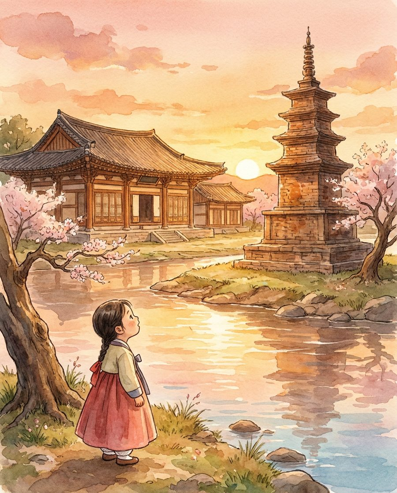
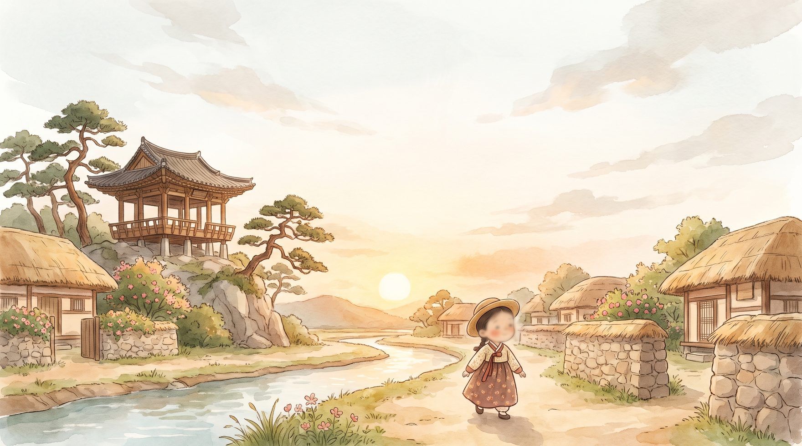
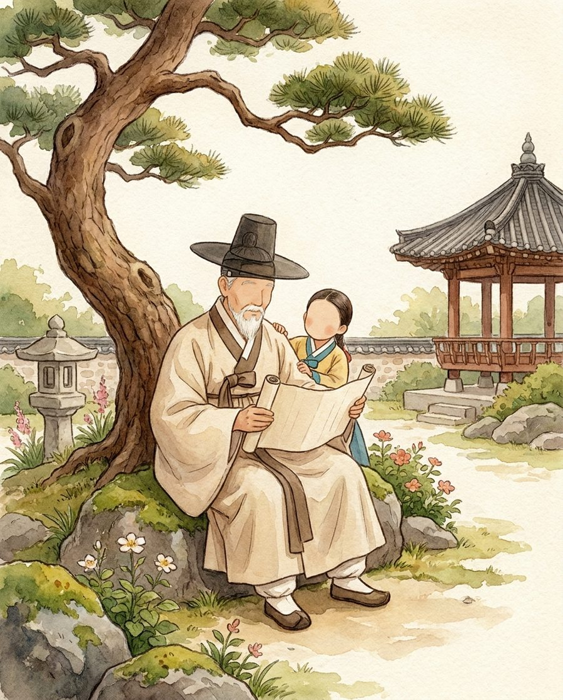
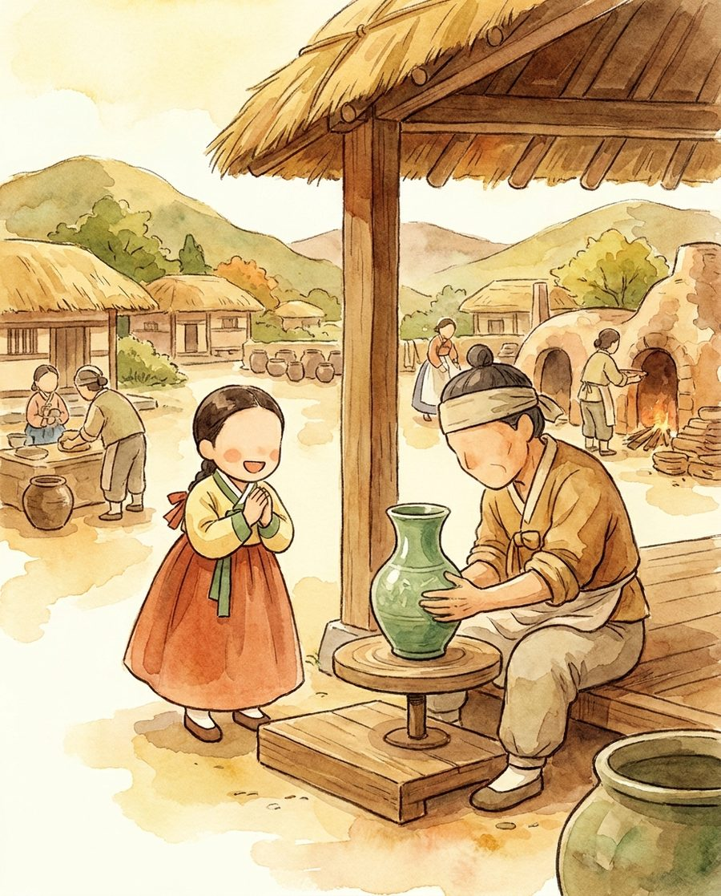

신륵사
강가의 오래된 절
남한강을 굽어보는 신륵사와 벽돌 탑. 아이는 옛 스님을 만나 강의 전설을 듣습니다.
여주의 승인된 역사 사실로 동화와 삽화를 만들고 전자책으로 묶습니다. 단계별 소요 시간·비용, 역사 사실 검증(환각 탐지), 아동 안전 가드레일이 실제로 동작합니다.


여주의 실제 역사와 명소를 배경으로, 아이가 주인공인 단 하나의 동화를 만듭니다. 삽화부터 PDF 전자책까지 자동으로.
실제 여주의 역사·명소가 동화의 무대가 됩니다. (카드에 마우스를 올려보세요)

남한강을 굽어보는 신륵사와 벽돌 탑. 아이는 옛 스님을 만나 강의 전설을 듣습니다.

여주에 잠든 세종대왕의 시대로. 아이는 지혜로운 임금과 함께 글자와 과학을 배웁니다.

여주 도예촌에서 청자를 빚는 장인을 만나, 아이는 손끝으로 전통을 이어받습니다.